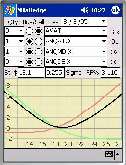
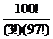
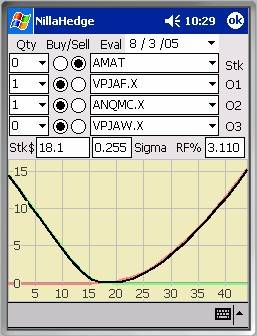
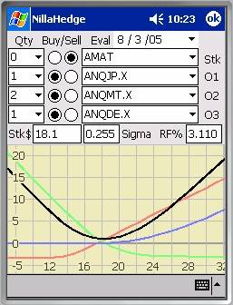
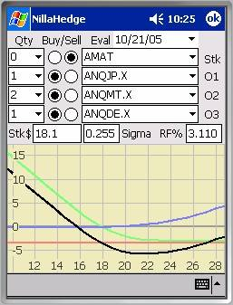
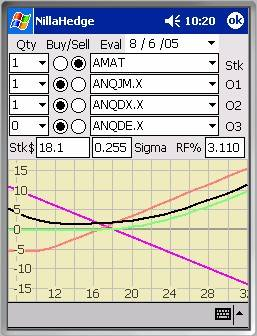

Hedge ExplorerThe Hedge Explorer provides a graphical environment in which option spreads and hedges can be evaluated. The Hedge Explorer supports analyzing strategies involving up to three different options and their underlying stock. The quantity of each issue is user-specified, so the Hedge Explorer inherently supports ‘ratio spreads,’ where the quantities can take on values other than 0 or 1.
Applied Materials (AMAT) has 50 calls and 50 puts. If you downloaded all of them in the OptionChainRetriever, how many spreads can you construct in
HedgeExplorer?
If you select a different symbol for O1, O2, and O3, there are 
Hedge Explorer plots show stock prices along the X-axis and profit (loss) along the Y-axis. The colors assigned to option symbols are red, green, and blue ordered from topmost symbol to bottom (e.g. VPJAF.X – red, ANQMC.X – green, etc. in the screenshot at right). A stock position will plot in purple. When two or more issues have nonzero quantities, the sum of the positions is displayed in black. The curves are plotted in the following order: red, green, blue, purple, black.

To illustrate, we’ll
explore a few examples. The two options
contributing to the spread above right are (in red) ANQAT.X, an
Players on a tight budget might be happier with the spread
at right. The two options contributing
to this spread are (in red) VPJAF.X, a

If you can flash more cash, you could consider the spread at
left. ANQJP.X is a

Since this is a calendar spread, it’s useful to consider how
the position behaves when the upside heavy lifter (ANQJP.X) expires. In the screenshot at right, the evaluation
date has been moved up to

If you have a taste for arbitrage, you could play the
options and stock markets against each other.
In the screenshot at left, ANQJM.X is a
Now that you’ve seen a few ways to find a profitable position in the Hedge Explorer, we can address the operational details.
The Stock Symbol combo-box (to the left of the label ‘Stk’) allows you to enter or select a stock symbol from a drop-down list. Upon picking a stock, option symbols for that stock are loaded into the option symbol combo-boxes, so you are always selecting options drawn on that underlying. To plot, the Stock Qty must be nonzero and its Buy or Sell button must be selected.
Option Symbol combo-boxes allow you to select an option symbol from the drop-down list or type a few letters and let auto-completion find an option symbol for you. To see a plot of an option’s profit (loss) line, the associated Qty must be nonzero and its Buy or Sell button must be selected.
These edit boxes specify non-negative floating point quantities of the Stock or Option symbol to the right. ‘1’ represents a single share or option, not a block of 100 shares or a contract with 100 options. Don’t get too caught up in the magnitudes - for analytical purposes the ratios between the quantities are more important.
Initially in an undefined state, once selected, the Buy/Sell buttons subsequently act as radio buttons, selecting one, deselects its opposite.
The Eval Date picker drives the time to expiry of the options enabled in the plot. It is initialized to the present date, but you can modify the evaluation date to see how the profit (loss) curves look at other points in time.
The stock price is loaded from the database when a stock symbol is selected, so you can see and modify it. The Hedge Explorer adopts the Confirm Save Preferences of Analyzer Dialogs, so the Hedge Explorer may ask permission before updating the stock’s market price or do so silently, based on the state of ‘Analyzer dialogs – close’ preference.
The stock’s volatility is loaded from the database when a stock symbol is selected, so you can see and modify it. The Hedge Explorer adopts the Confirm Save Preferences of Analyzer Dialogs so it will ask permission before updating the stock’s volatility if ‘Analyzer dialogs – close’ preference is checked.
The Hedge Explorer loads the currently stored value and displays it as a percentage. Changing the value in the edit box will force a redraw with the new value, but the global risk free rate won’t be updated until the HedgeExplorer closes. At that time, the stored value of the risk free rate is updated silently.